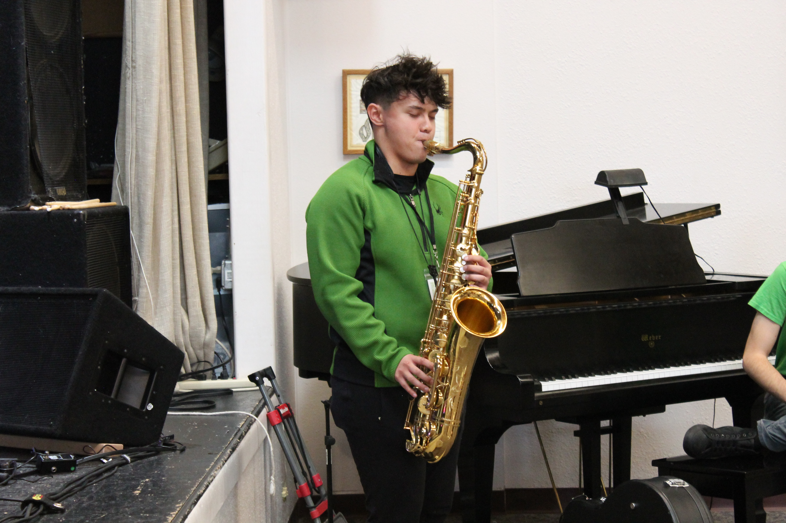

Alex Alunday
Aalunday@unm.edu
PROFILE
Alex Alunday is a senior jazz studies major who plays the saxophone and piano. While still a student, he has made his way into the professional scene and begun to make a name for himself. He performs multiple styles including, Jazz, Classical, Soul, RnB, Pop, and Hip Hop. He also teaches private lessons for saxophone, piano and clarinet.
EDUCATION
University of New Mexico 2023, Bachelor of Music
PROFESSIONAL EXPERIENCE
Being versatile in many styles, Alex performs all over New Mexico with multiple bands as a sideman and a band leader. He was performed at venues such as, The Outpost, Santa Fe Opera, El Rey, and Sunshine Theater.